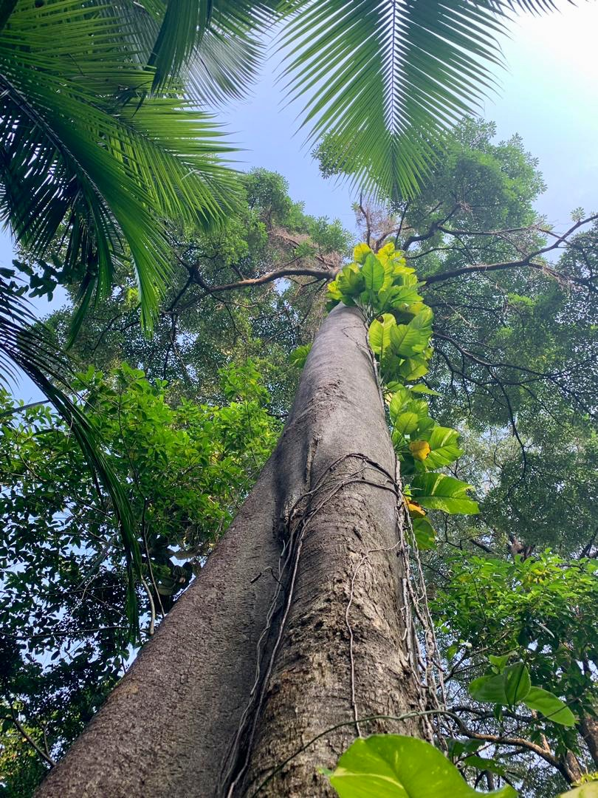
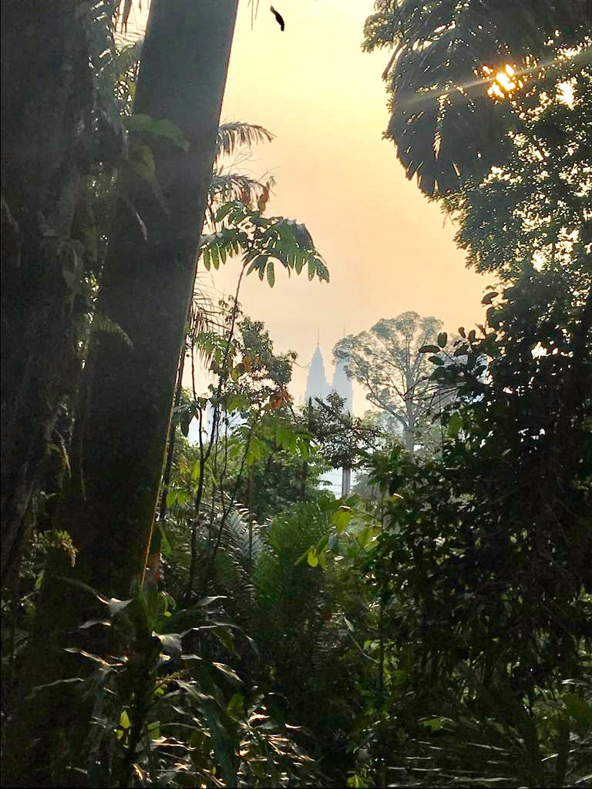

A New Walk in the Woods
Following the success of our outing to the footpaths of Bukit Kiara, we ventured forth to a beautiful new woodland park, which has recently opened. Phase l & ll are complete and the remaining larger Phase lll is scheduled to open soon.
Taman Tugu (Taman = Park or garden, Tugu = Monument) is located right in the middle of town, close to Merdeka Square. It is a great place to take your visitors for a little taste of jungle, without having to drive or walk miles or meet any leeches. Part of the route is pretty level and suitable for aged parents and the rest is well maintained with stone steps and footways. It gets very slightly muddy after rain, but is generally well drained.
We set off at 8:30am, and we were the only ones in the car park apart from a catatonic
security guard! The paths are almost completely in the shade, but it can be humid unless there is a breeze blowing. We wore mosquito repellent, but there is no need to smother yourself in sunscreen.
I have been to the park at the weekend and even then there were only a few visitors.
This may change when the new visitors centre opens with Phase lll, but go there now
while it’s quiet. There are several areas with adult sized swings to soothe you and
a great little photo spot with a view of the Twin Towers surrounded by foliage.
There is running clean water in a pretty little stream and signage and maps.
Sadly, dogs are not allowed.
About Taman Tugu
There are currently 40 acres with about 4km of forest trails open daily to the public from 7am to 6.30pm with free admission. By early 2020, they will be opening more trails and will have a total of approximately 7km of walking available.
History
Originally, the area was home to British residences, prior to independence in 1957. There are quite a number of palm oil trees, which are believed to have been brought in as seeds from West Africa and planted for ornamental purposes. After independence, the site was then home to Malaysian government officials including the first Lord President, the first Director of Agriculture and Finance Minister Tun Tan Siew Sin. The area eventually was home to government quarters and you will see the footprints of these quarters as concrete slabs along the trails.
Phew!
The land was being proposed as a site for a for-profit theme park or for commercial development, but fortunately, the Malaysian sovereign wealth fund Khazanah were persuaded to convert the land into a public park and protect the secondary forest. In conjunction with FRIM (the Forest Research Institute of Malaysia) existing trees have been protected and 4,000 new trees have been planted. Over 100 truckloads of rubbish were cleared from the site.
Inspired by our National Trust
Taman Tugu will be transferred into Amanah Warisan Negara (“AWAN”) to be managed and protected into perpetuity as a public green space. AWAN is a national public trust incorporated with a longer term objective to undertake more projects that involve the rejuvenation, rehabilitation and/or operations of selected public spaces together with heritage assets of national significance – as inspired by the National Trust for Places of Historic Interest or Natural Beauty or commonly known as the National Trust UK.
How to get there
We met at the Campsite car park, which is E2 on the attached map. It’s a gravel area beside the road, by the funky industrial style concrete gateway. There are two other entrances, but this is the best for level access. The car park is on Persiaran Sultan Salahuddin, between the National Monument (Tugu Negara) and the Istana Selangor (Sultan of Selangor's KL Palace) The road is a small winding lane which goes past all the parked coaches at the National Monument and up the hill, past the Taman Tugu Nursery car park, and Gate E1, on to the car park beside the road.
By Philippa Matthew
Photos by Yayoi Earle and Lynda Talbot